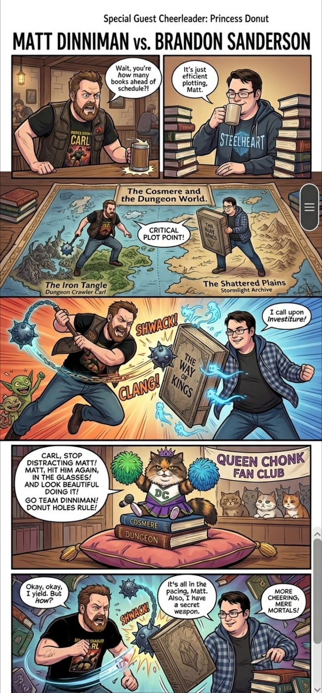
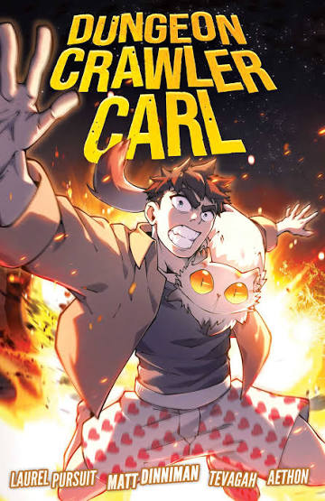
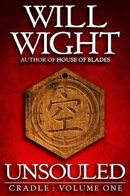
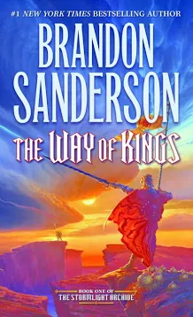
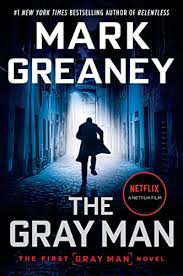

Quest Log
My actual thoughts on whatever I've got playing — fantasy, sci-fi, thrillers, LitRPG, doesn't matter. If it's good enough to survive a long drive, it ends up here.
This is mostly just a fun hobby — somewhere to keep track of what I've actually finished so I stop losing track of my own damn books. No schedule, no rubric, nobody paying me.






"GOD DAMNIT DONUT!" — Carl, Dungeon Crawler Carl
Why Dungeon Crawler Carl Is My Favorite Series
Finished the whole damn series. Slightly let down by the latest book, but book 2 is still the best of the bunch — and I got to meet Matt Dinniman and Jeff Hays at a signing.
Ranking My Favorite Audiobook Narrators
A shitty narrator can kill a great book. A great one can save a mediocre one. Jeff Hays sits at the top, and Sanderson's two-narrator system deserves way more credit than it gets.
Sanderson on Audio: Different Itch, Same Addiction
The magic systems are insane as hell, the books are massive, and audiobooks are the only reason I've actually finished any of them.
The Stormlight Archive: Sanderson at His Absolute Best
Right up there with Mistborn, and the highest score on this site outside of Dungeon Crawler Carl. Massive books, and audio makes that a feature.
The Wheel of Time: The Series That Started It All
The first big series I ever read, and the reason I found Sanderson at all. Amazing, and genuinely too long and redundant in places.
Cradle: Great World, Great System, Fewer Laughs
The world and the power system are fantastic. Up there with Dungeon Crawler Carl, just a lot more serious about it — and it can get confusing.
The Gray Man: My Favorite Assassin Series
Court Gentry against impossible odds, over and over. My favorite action series — I've used the handle dahgreyman in games for years because of it.
The Name of the Wind: Kvothe Tells His Own Legend
Rothfuss makes you believe every word of Kvothe's own legend. Stupid good prose, a slow burn that earns every hour, and Nick Podehl carrying the whole thing.
Ready Player One: Nostalgia Bait, and I Ate It Up
A dead billionaire turns the planet into 80s-trivia egg hunters. Silly setup, real stakes, and Wil Wheaton was born to narrate it.
The Dark Tower: An Absolute Beast of a Series
Dark fantasy, western and horror mashed together, nowhere near my usual lane, and it stuck with me anyway. Roland's quest feels bigger than life itself.
Super Powereds: Underdogs with a Secret
A superhero college story about the kids who can't control their powers, and the secret shot they get at fixing it. Academy progression with capes instead of stat sheets.
Scythe: Humanity Beat Death, and It Got Weird
Nobody dies anymore, so somebody has to do it on purpose. A genuinely fucked-up premise and a world that's perfect on the surface and ice-cold underneath.
Mistborn: Burning Metal, Breaking Empires
Sanderson's heist-driven trilogy might be the most fun the Cosmere's been for me yet. Allomancy is the best damn magic system I've heard, and the Hero of Ages ending is one of the best trilogy closers around.
The Sunlit Man: Sanderson in a Hurry
A fast, self-contained Cosmere standalone about a guy on the run from a sun that's actively trying to kill him. Doesn't hit Mistborn or Stormlight highs, but makes a solid palate cleanser between bigger series.
1% Lifesteal: Weak Ability, Brutal Growth
A weak-as-hell-sounding ability, a brutal post-apocalyptic world, and a growth system that makes you question what Freddy Stern is turning into with every fight he wins.
12 Miles Below: Cool World, Middling Payoff
A frozen-ass apocalypse, a living-machine underground maze, and scavenged tech treated like magic — great setting, just didn't hook me on a character level.
Warformed: Stormweaver — If You Liked Victor of Tucson
Academy training, tournament arcs, and grounded power growth that's actually earned, not handed out. If Victor of Tucson worked for you, so will this.
Other Progression Fantasy Series I Want to Try
He Who Fights with Monsters, The Primal Hunter, Cradle, and a few more on my list — plus why I want to branch into horror and action next before I get stuck in a rut.
Victor of Tucson: Finished, and It's One of My Favorites
Loved the main character, the progression, the fights. Robb Moreira's narration fucking nails it. Already excited for the next book.